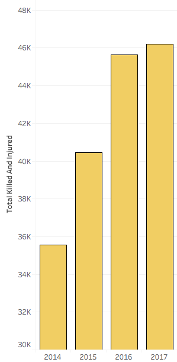
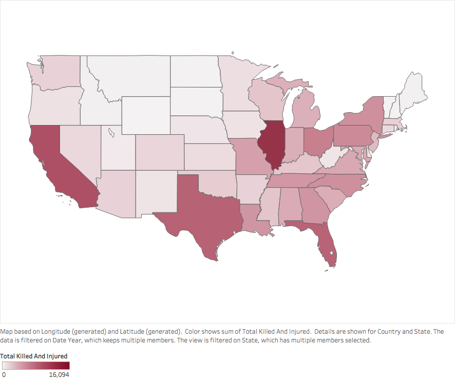
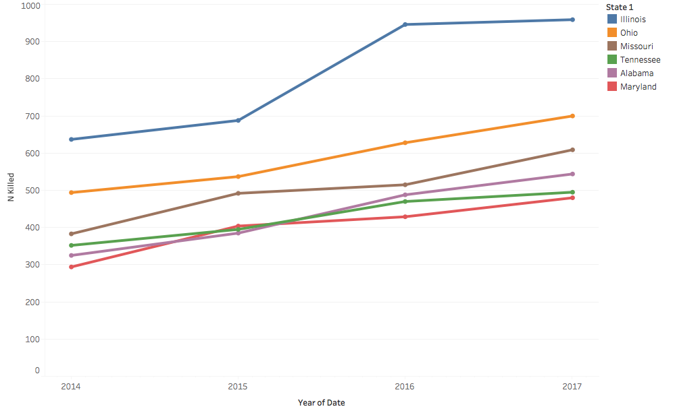
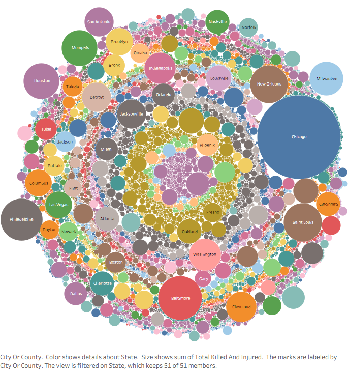
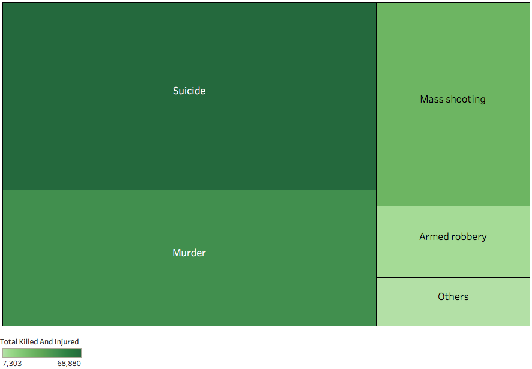

United States of America has the highest number of gun deaths than any other developed nation and has far higher levels of gun ownership than any other country in the world. Every day, hundreds of people in US are shot and injured using guns.
Through this data story, we will try to visualize and analyze publicly available data of gun violence in US over the last four years (2014-2017).
Link to dataset - https://www.kaggle.com/jameslko/gun-violence-data
Gun violence has been a major problem in US since many years. But the recent increase in the rate of gun violence is alarming. There has been a 30% increase in number of people killed or injured through gun violence since 2014.

Gun violence is experienced across the country, but it is observed that states like Illinois, California, Texas, Florida and Ohio report high number of people killed or injured due to gun violence. This doesn’t necessarily mean that these states have higher gun violence rate. They report high number of violence probably due to their high population as compared to other states.

Which are some states that have constantly reported an increase in number of killings due to gun violence?

The line graph suggests that the states of Illinois, Ohio, Missouri, Tennessee, Alabama and Maryland have constantly reported an increase in number of killings due to gun violence.
The number of killings in each of these states except Ohio (42% increase) has increased by more than 50% over the last four years, which is significantly higher than the national increase of 30%.
Are there any specific cities or areas that have reported high number of killings/injuries and are prone to gun violence?

The bubble chart shows that cities like Chicago, Philadelphia, Baltimore, Saint Louis, New Orleans, Houston and Memphis have reported high number of casualities due to gun violence.
The interesting point to note here is that the cities like Baltimore, Memphis, New Orleans, Milwaukee, Saint Louis, Cleveland, Detroit and Jacksonville have reported significant number of killings and injuries despite their small population as compared to metropolitan cities like Chicago, Washington, Houston, Philadelphia and others.
What type of incidences have led to significant casualties due to guns?

The tree map depicts that suicide, murders, mass shooting and armed robbery are major incidences that have led to causalities. Domestic violence, accidental shooting and unknown incidents are classified as 'Others'.
It is astonishing to see that suicides consist of one-third of the casualties due to guns. According to a recent study, there is a strong relationship between gun ownership and suicide. It quotes that access to gun increases the risk of death by suicide by three times.
Note - There is no specific incidence type mentioned in the dataset. Keywords are used to extract incidence type from the recorded incident characteristics. Records with multiple keywords are counted towards all the types that match.
SUMMARY
There is no hiding from the fact that the gun problem in US is massive. Gun violence is increasing every year as people are having easy access to guns. Through the visualizations, we have discovered some of the below aspects:
Number of killings in states like Illinois, Ohio, Missouri, Tennessee, Alabama and Maryland have constantly increased over the years.
Cities like Baltimore, Memphis, New Orleans, Milwaukee, Saint Louis, Cleveland, Detroit and Jacksonville have reported significant number of causalities due to gun violence and can be labelled as unsafe as compared to other cities.
Suicides, murders and mass shooting contribute majorly towards the causalities caused by guns.
It is observed that cities like Chicago in Illinois, Baltimore in Maryland, Memphis in Tennessee, Saint Louis in Missouri and Cleveland & Cincinnati in Ohio have contributed significantly to their state’s total of casualties due to guns.
The bitter truth of gun violence is that the access to guns have led to an astonishing suicide rates among the owners. Homicides including mass shooting have also increased drastically over the past few years. There is a strong opinion from people of United States that gun violence needs to stop and strict laws and legal systems must be introduced to stop it.